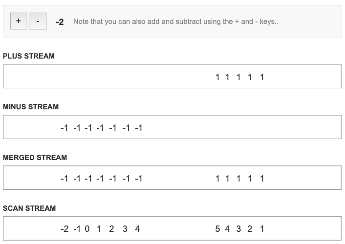

FRP in Javascript
What is Functional Reactive Programming?
Functional Reactive Programming enables a much simpler way to deal with events. With Bacon JS, events are separate from the views and models as a stream of values in time. These streams can be thought of as lists of values that can then be mapped to transformation functions that model the data before passing to the views to render. This requires a different mindset to the typical imperative style of UI programming as rather than mutating the state throughout the code, changes are represented as new state objects that are passed down through the views.
A very simple example of this relationship between events and state is an event stream that listens to clicks and maps each click to the value 1. The resulting list (or stream) of 1s at each point in time that the event is fired can then be reduced with a Bacon JS scan function to add them all together, thereby resulting in a state representing the number of times something has been clicked.
// The value from the event stream can be thought of as a list:
eventStream = []
// As the events come in (for instance an 'Add 1' button is clicked), 1 is added to the list
eventStream = [1] // Click!
eventStream = [1, 1] // Click!
// The values can be reduced by adding the individual items together:
eventStream = [1, 1, 1] // = 3
eventStream = [1, 1, 1, 1] // = 4
eventStream = [1, 1, 1, 1, 1] // = 5The benefits of this may not be immediately apparent, but this can greatly simplify your asynchronous code by composing pure functions around the values from the event stream in a very easy to read manner, rather than chaining callbacks together (that can become very difficult to maintain) and mutating the state of variables (leading to side effects that can produce unexpected bugs).
I highly advise watching the following presentation by Phillip Roberts to help gain a clearer insight:
When is it useful
Functional Reactive Programming is useful in almost any case that deals with realtime, event-driven behaviour. Examples of this would be computer games (like the classic 'Snake' game), realtime charts, spreadsheets, and could also be handy on the server side for background processes.
What is BaconJS?
Bacon JS is a library for Javascript that provides methods like merge, combine, and flatMapLatest for handling multiple event streams, and functions like map and filter for transforming and filtering the streams.
Simple Example
Below is an adaptation of the simple plus/minus demo from the Bacon JS Docs to include key presses as additional event streams, tied-in with the time-based visual that Phillip Roberts used in his talk:
HTML
<!DOCTYPE html>
<html>
<head>
<script src="//ajax.googleapis.com/ajax/libs/jquery/2.1.1/jquery.min.js"></script>
<script type="text/javascript" src="http://cdnjs.cloudflare.com/ajax/libs/bacon.js/0.7.10/bacon.min.js"></script>
</head>
<body>
<button id="plus">Plus</button>
<button id="minus">Minus</button>
<div id="counter"></div>
</body>
</html>Javascript
var all_key_downs = jQuery(document).asEventStream('keydown');
// Click Events
var click_plus = jQuery('#plus').asEventStream('click');
var click_minus = jQuery('#minus').asEventStream('click');
// Key Events
var key_plus = all_key_downs.filter(function (e) { return e.keyCode === 187 && e.shiftKey; });
var key_minus = all_key_downs.filter(function (e) { return e.keyCode === 189 && e.shiftKey; });
var counter = click_plus
.map(1) // Map click_plus to 1
.merge(key_plus.map(1)) // Map key_minus to -1
.merge(click_minus.map(-1)) // Map click_minus to -1
.merge(key_minus.map(-1)) // Map key_minus to -1
.scan(0, function (x, y) { return x + y; });
// Assign the result of variable counter to dom element with class of 'counter'
counter.assign(jQuery('#counter'), 'text');Starting out, the streams will all be empty except for the scan stream which will begin with an initial 0 value passing through it.
Then whenever the '+'' key or the '+' button are pressed, the plus stream will show a "1" passing through it which is then mirrored in the merge stream and added up in the scan stream (5 4 3 2 1 0).
Whenever the '-'' key or the '-' button are pressed, the minus stream will show a "-1" passing through it which is also mirrored in the merge stream alongside the "1"s and then the scan stream will minus these from whatever the last value was (-2 -1 0 1 2 3 4 5 4 3 2 1 0).

The counter just shows whatever the last value of the scan stream is - so each point in the streams jsut represents a moment in time that can be assigned to an element to display it.